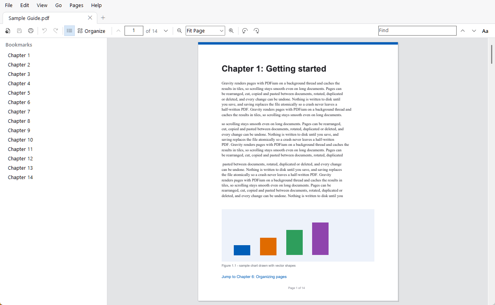

Existing design
Saved reference
Original icons and control styling.
Lucide design
Selected directionConsistent icons. Clearer groups. More comfortable controls.
Apple-inspired clarity
One main toolbar, familiar segmented controls, and a clear relationship between a selection and its actions.
Tufte-inspired restraint
The document carries the detail. Quiet surfaces, direct page labels, and repeated thumbnail scales support comparison.
The tradeoff
Larger controls are easier to identify and target. The existing design packs more commands into less space.